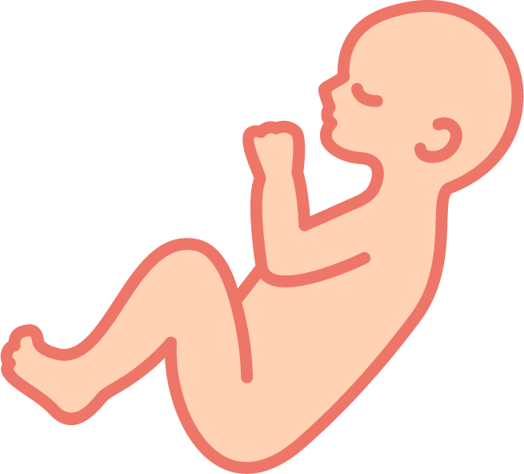
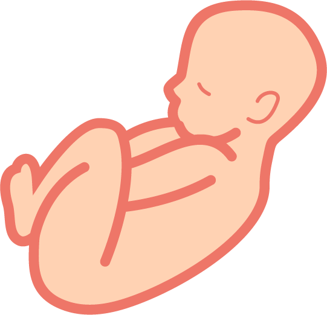

¿Qué es el control prenatal?
Conjunto de acciones y procedimientos sistemáticos y periódicos destinados a la prevención, diagnóstico y tratamiento de los factores que puedan condicionar morbimortalidad materna y perinatal.
Debe iniciarse tan pronto como se confirme el embarazo.
Objetivos
1
Evaluar el estado de salud de la madre y el feto.
2
Indicar ácido fólico lo antes posible para la prevención de defectos del tubo neural.
3
Planificar los controles prenatales.
4
Evaluar posibles riesgos y corregirlos.
5
Planificar los controles prenatales.
El control prenatal es importante incluso en embarazos saludables.
Los controles regulares ayudan a:
Identificar pacientes con riesgo tanto obstétrico como perinatal.
Identificación temprana de posibles enfermedades y malformaciones.
Intervenciones ligadas a la prevención de posibles riesgos.
Contribuyen a promover conductas saludables durante el embarazo.
No te pongas en peligro a ti ni a tu bebé, acude a todas tus consultas prenatales.
Consultas prenatales
1ra. consulta
En el transcurso de las primeras 12 semanas.
2da. consulta
Entre las 22 - 24 semanas.
3ra. consulta
Entre las 27 - 29 semanas.
4ta. consulta
Entre las 22 - 35 semanas.
5ta. consulta
Entre las 38 - 40 semanas.